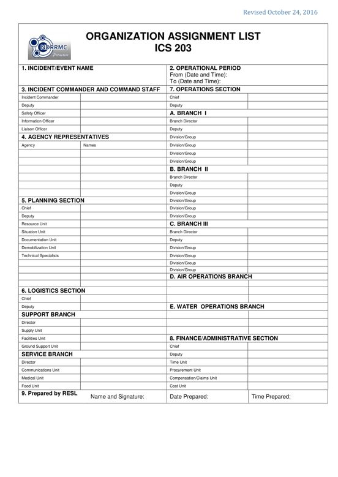

PURPOSE: The ICS 203 provides ICS personnel with information on the units that are currently activated and the names of the personnel staffing each unit. Not all positions need to be filled and some positions may contain more than one name. The size of the organization is dependent on the magnitude of the incident / event and can be expanded or contracted as necessary.
PREPARATION: The Resource Unit Leader (RESL) prepares the list under the direction and supervision of the Planning Section Chief (PSC).
DISTRIBUTION: The ICS 203 may be reproduced with the IAP and may be part of the IAP given to all supervisory personnel at the Section, Branch, Division / Group and Unit levels. All completed original forms must be given to the Documentation Unit.

BLOCK NO. |
BLOCK TITLE |
INSTRUCTIONS |
| 1 | Incident Name | Enter the name assigned to the incident / event. |
| 2 | Operational Period | Enter the start date (mm-dd-yyyy) and time (24 hour format) and end date and time for the operational period to which the form applies. |
| 3 | Incident Commander and Command Staff | Enter the complete names of Incident Commander and Command Staff. |
| 4 | Agency Representatives | Enter the complete names of Agency Representatives. |
| 5 | Planning Section | Enter the complete names of the Planning Section members. |
| 6 | Logistic Section | Enter the complete names of the Logistics Section members. |
| 7 | Operation section | Enter the complete names of the Operations Section members. |
| 8 | Finance / Administration Section | Enter the complete names of the Finance / Administration Section members. |
| 9 | Prepared by RESL | Enter complete name of the RESL, signature, date (mm-dd-yyyy), and time (24 hour format) the form was prepared and completed. The form is prepared usually by the RESL. |